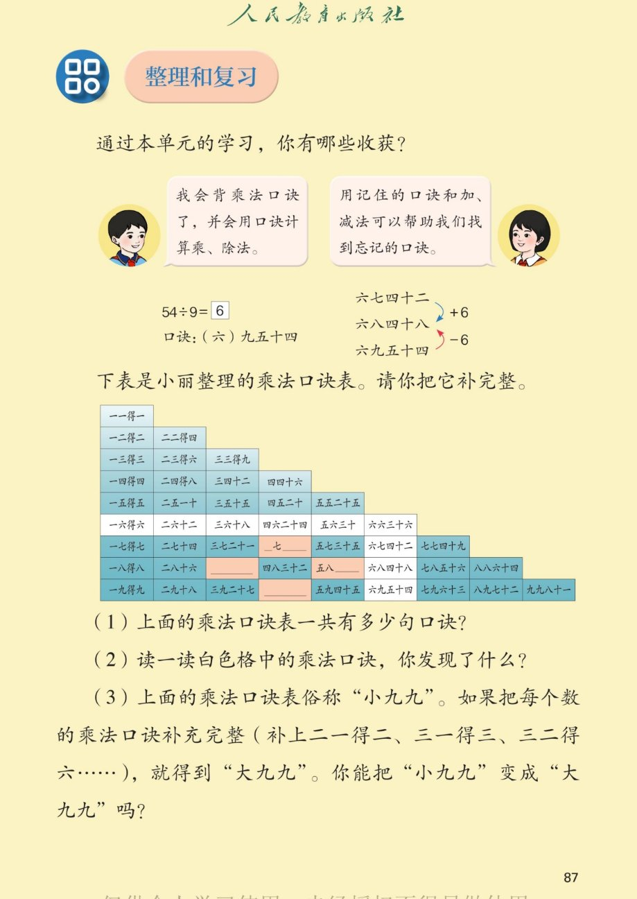

×
🔊 手机听不到声音怎么办？
① 先把手机
媒体音量调大
，确认没开静音、没连蓝牙耳机；在微信里打开的，点右上角「⋯ → 用浏览器打开」。
② 还是没声音？到应用商店免费下载
Microsoft Edge 浏览器
（它自带朗读发声），用它打开本页面就能出声。
③ 换了 Edge 仍然没声音，说明这部手机的
硬件/系统不支持
网页朗读（多为老旧机型）；近几年买的新手机一般都能正常播放。
→ 打开声音自检
🔊 五、7~9 的表内乘、除法 · 课本第 87 页 · 整理和复习（乘法口诀表）
人教版《数学》二年级上册 · 有声图文带读 · 先想后看解析 · 小九九 45 句 · 白格规律 · 大九九
题数
6
认知
2
强化
3
拓展
1
本页重点
口诀表整理 · 找规律补口诀 · 小九九变大九九
🎧 分两步学：
① 解析教材图片
——纯声音读图，读到哪一块哪一块闪动提示；关键处先倒计时让你思考，再在图片下方给出解析并朗读。
② 分层提问练习
——六道分层题（认知 / 强化 / 拓展），先思考再展开解析、朗读参考答案；这一步不再回到图片。
也可以随时点任意一句话、图上任意一块单独听；点课本文字卡还会展开答案。
教材图片（点块听读，读到哪块哪块闪）

📖 人教版《数学》二年级上册 · 课本第 87 页 · 图片仅供个人学习，版权归人民教育出版社所有
🤔 想一想（点我可跳过）
课本的文字（点句子：听读 + 看答案）
收获
忘了口诀怎么办？
看答案 ▾
忘了六八多少：想六七四十二，42+6=
48
；
也可以想六九五十四，54−6=
48
；
💡 相邻两句口诀的积相差 6。
算一算
54÷9 用哪句口诀？
看答案 ▾
54÷9=
6
，口诀：
（六）九五十四
。
补口诀
四处空缺填什么？
看答案 ▾
第 7 行：
四七二十八
；
第 8 行：
三八二十四
、
五八四十
；
第 9 行：
四九三十六
；
💡 小九九一共
45 句
。
白格发现
白色格里藏着什么规律？
看答案 ▾
白格都是
6 的口诀
；
相邻两句的积
相差 6
；
积的个位 6、2、8、4、0
循环出现
，都是双数。
分层提问练习（先想后看解析）
📋
认知
口诀表一共有多少句口诀？
看解析
🤔 想一想
怎么想的：
别一句一句去数，
按行数
更快：第 1 行 1 句、第 2 行 2 句……第 9 行 9 句，把 1 到 9 加起来，正好 45 句。
解析：
第 1 行 1 句，第 2 行 2 句……第 9 行 9 句；
1+2+3+…+9=
45（句）
。
🧮
认知
54÷9 用哪句口诀？商是几？
看解析
🤔 想一想
怎么想的：
用口诀求商，
先看除数 9
，就想 9 的口诀：九几五十四？六九五十四，商是 6。最后用 6×9=54 验一遍，保证没错。
解析：
口诀：（六）九五十四；
54÷9=
6
。
🔍
强化
五八多少？如果忘了怎么推出来？
看解析
🤔 想一想
怎么想的：
先直接答五八四十；忘了就用
更熟的口诀推
：五六三十，再加两个 5 是 40；或者六八四十八减 8 得 40，两条路都能到。
解析：
五八
四十
；
忘了就想五六三十，30+5+5=
40
；
💡 用相邻口诀加减推算
✏️
强化
第 9 行的空缺是哪一句口诀？
看解析
🤔 想一想
怎么想的：
先看这一行是
谁的口诀
（第 9 行是 9 的口诀），再顺着数缺了第几句：前三句之后空一格，就是四九三十六，用 27+9 验证。
解析：
四九三十六
；
推算：三九二十七，27+9=
36
。
⬜
强化
白色格的口诀有什么规律？
看解析
🤔 想一想
怎么想的：
先把白格的口诀
读一遍认出是谁
（都是 6 的口诀）；再横着比，相邻两句积相差 6；最后只看个位，6、2、8、4、0 一圈圈循环。
解析：
都是
6 的口诀
；
相邻两句积
相差 6
，个位 6、2、8、4、0 循环；
💡 6 的倍数都是双数
🌈
拓展
大九九有多少句？比小九九多多少句？
看解析
🤔 想一想
怎么想的：
大九九每行都
满 9 句
，一共 9 行，就是 9×9=81；再拿它减去小九九的 45 句，81−45=36，多出来的正是被省掉的那些倒着说的口诀。
解析：
大九九 9 行每行 9 句：9×9=
81（句）
；
81−45=
36（句）
；
🌈 补上二一得二、三二得六这些就变大九九
① 解析教材图片
② 分层提问练习
⏹ 停止
纯声音 + 高亮跟随 · 想好才出解析
← 返回导航